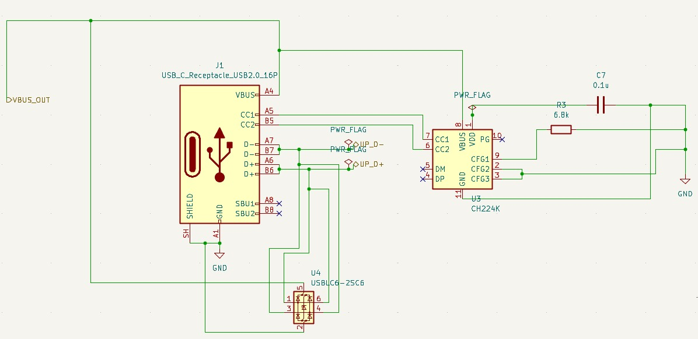

Power Delivery Input Stage
Function: USB-C Power Delivery input interface and negotiation
Purpose: Accepts USB-C PD input, negotiates power profiles, and provides regulated input to power management stage
Key Components: USB-C connector, CC communication, PD controller

Figure 1: USB-C PD input circuit with CC lines and configuration
| Parameter | Specification |
|---|---|
| Connector Type | USB Type-C (24-pin) |
| Power Delivery Version | USB PD 2.0/3.0 compatible |
| Input Voltage Range | 5V - 20V (USB PD profiles) |
| Maximum Current | Up to 5A (100W capability) |
| CC Communication | Configuration Channel for PD negotiation |
| Protection | Overvoltage, overcurrent, ESD protection |
Inputs:
Outputs: